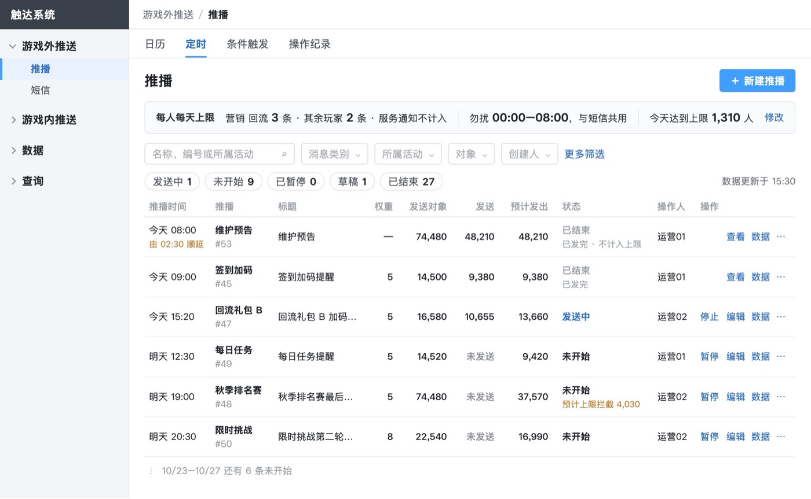
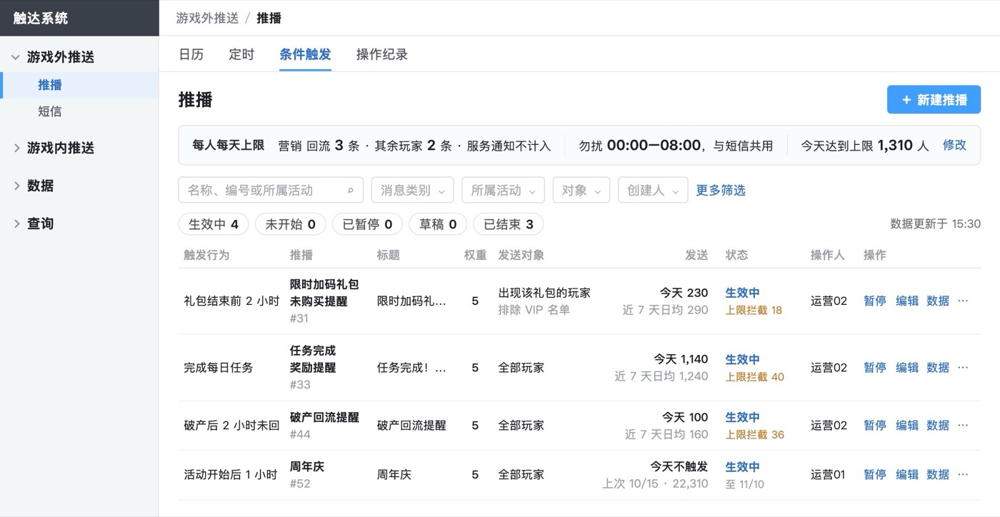
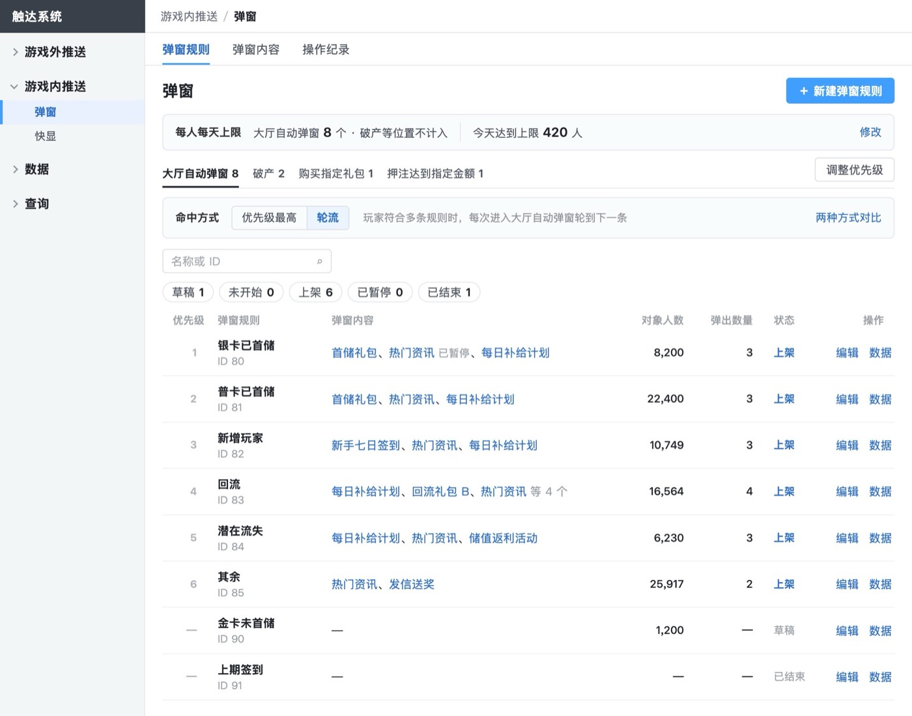
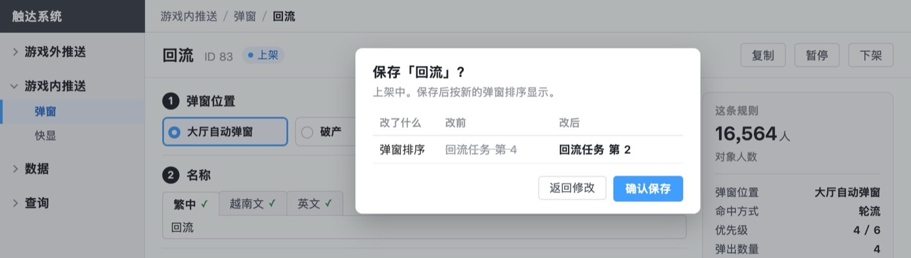
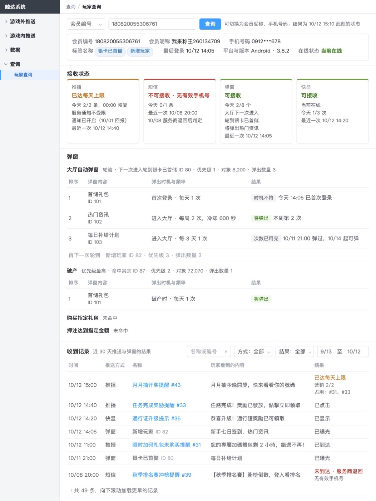
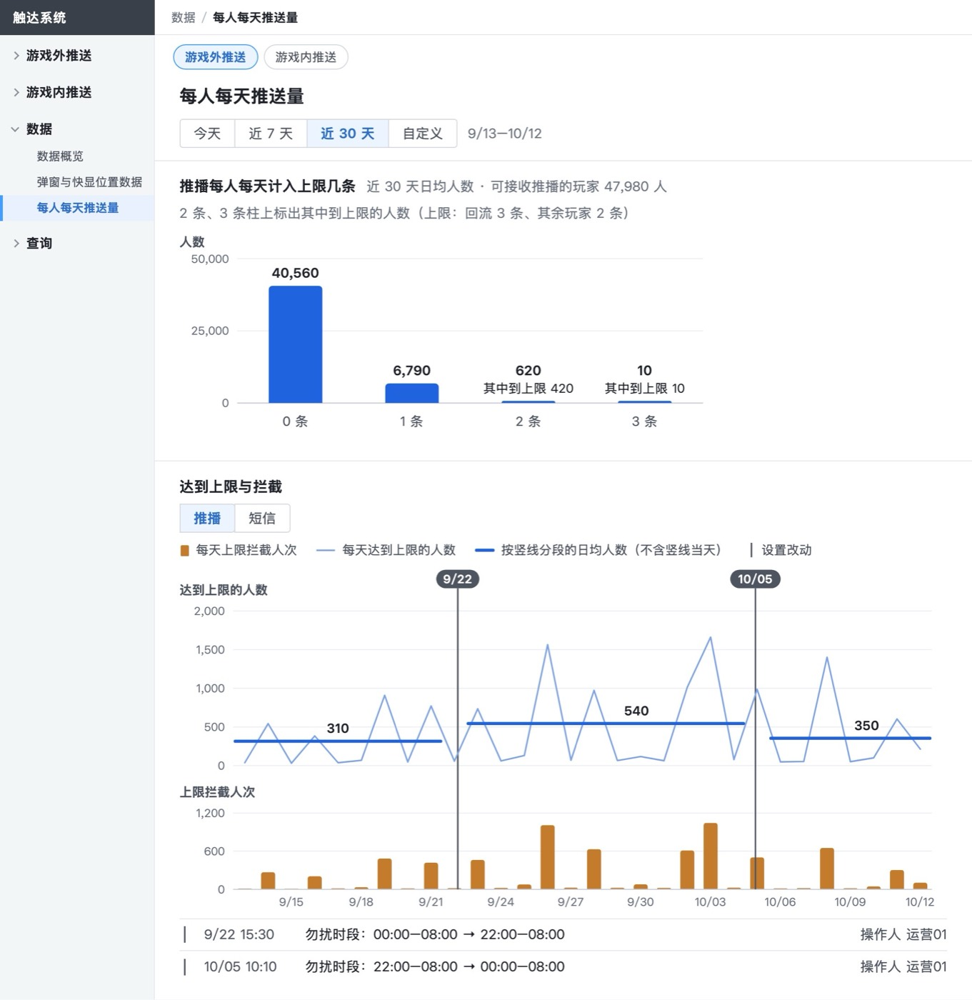

成品在 评审版_定稿改_1027/推送系统后台集成需求/3_原型_需求评审版.html。下面先看改完的样子，再看按推荐先做的 3 件。






| 哪一块 | 补了什么 |
|---|---|
| 推播状态 | 重复的定时在发送中也能暂停；恢复时已过最后一次时间的为已结束 · 已到期；已暂停的也能停止；已结束的只能查看 |
| 权重预留 | 按发出那一刻玩家所在的群组判断；顺延到次日的按次日算；留了名额的推送被改对象、改日期或降权重，之前为它留名额被拦下的推送不补发；权重 10 在什么条件下一定不被拦截 |
| 名额占用 | 查看日可选近 30 天到今天起第 7 天；没发出的写预计；拦截人数可点开导出名单 |
| 弹窗轮流 | 记住的是上次实际弹出（以曝光为准）的规则；没有记录时从优先级最小的一条开始；上次那条已下架时按原来的优先级取下一条 |
| 弹出时机与频率 | 非首次登录、第 N 次登录、活动开启写明定义；每 N 天按「含今天往前 N 天」算；跨规则、跨位置都合计 |
| 快显 | 按曝光计数；条件触发时玩家不在线或不在该位置怎么处理；已结束原因同推播 |
| 操作纪录 | 补记暂停、恢复、下架、调整优先级、切换命中方式、弹窗内容的新建与编辑（数据页的改动竖线要用） |
原来要你定的 3 件，都能改回，已按推荐先做。不同意的告诉我，按最后一列改回。
| 事项 | 定了什么 | 依据 | 不同意时改回哪里 |
|---|---|---|---|
| Facebook、LINE | 「后台结构」图注写明：Facebook、LINE 不在本次，营销侧接好这两个渠道后，按短信的方式加入游戏外推送 | 需求清单列为必须，前提是营销侧能接入；需求文档 4.2.5 有逐种切换方案。评审版原来一处都没有 | 删这一句。要纳入本次就补一页；不纳入的话，需求清单的分级要不要改为可后做，由你定 |
| 会员标签设定的改动、A/B 实验 | 保留；第 1 页「标签群组」加一句：与标签需求（另一份需求）同期上线 | 需求清单写着「不在这次需求」，但发送测试、人群上限、弹窗实验都要用到群组，删掉后这几处缺了前提 | 删这一句；要移出，就删第 1 页「标签群组」和第 4 页「实验」两节，改三处引用 |
| 弹窗每人每天上限 | 补回大厅自动弹窗每人每天 8 个（各规则合计，破产等位置不计入），弹窗规则列表顶部加只读栏；玩家查询弹窗卡写「今天 2/8 个」 | 已定事项第 22 条把它列为小改动；需求清单「每种推送每人每天上限」为必须；需求文档默认 8 个；你说过上限应和弹窗排序放在一起设 | 删第 4 页这条规则和列表顶部栏（5 张图），第 1、9 页各改回一句 |
由一位没看过这项工作的核对人逐条做；首次不过的项已改，改后由我复读，未再派人复核。
| 条目 | 结果 | 证据或处理 |
|---|---|---|
| 1 边界看得见 | 过 | 只看首屏和侧栏答出 4 部分、10 页；翻到第 7 页答出所在部分与页码。窗口窄于 1100px 或打印时侧栏隐藏，沿用定稿样式未改 |
| 2 标题 | 过 | 都是短名词短语，同层句式一致；唯一带括号的长状态标签已删括号 |
| 3 措辞 | 首次不过，已改 | 三句读不准：「随标签需求上线」、权重 10 的三个条件堆在一句、快显「显示窗口」没定义。已改成事实句、拆成三点、写明 30 分钟 |
| 4 只写有效信息 | 过 | 没有过程痕迹、版本号、被否决的做法 |
| 5 篇幅 | 过 | 正文约 2,400 字加 34 张图；业务规则约 1.45 万字，默认折叠 |
| 6 阅读体验优先 | 首次不过，已改 | 同第 1、3 条的读者测试；第 3 条读不准的三句已改 |
| 7 读者最先看的地方 | 过 | 首屏、各级标题、页头、结尾的摘录逐处查过，我也读了一遍 |
| 8 每个功能三问 | 补做，都保留 | 只对 10/20 成本收益评估没覆盖的 5 个功能补做，见下表；开发量是推断，待研发评审估 |
| 9 类型卡逐条 | 多数过；不过的已改 | 已改：同一处写出成员（如「推播、短信、弹窗、快显各一张卡」）；同一界面两种状态改为「展开后」在上、「收起时」在下；去掉字段校验细节。保留：研发要做的改动与业务规则有重复，类型卡要求写明开发什么 |
| 功能 | 谁做、做几次 | 开发量（推断） | 不做时的人工做法 | 结论 |
|---|---|---|---|---|
| 推播权重与预留 | 运营每条营销推送选一次，多数用默认 5 | 中到大：发给每人前要算他当天后面更高权重的定时推送 | 错开发送时间，或临时调高上限；做不到点名保留 | 保留，你 10/27 定的 |
| 按人群的每人每天上限 | 运营负责人，活动期间改，约每月几次 | 中：按人群顺序取第一条适用的上限 | 全体统一一个上限，回流活动时只能全员调高 | 保留，定稿里你定的 |
| 名额占用对话框 | 运营查拦截原因，每周几次 | 中：读当天计数明细，按上限分列 | 找研发查库，约 30 分钟一次 | 保留 |
| 命中方式与跨规则合计 | 每个弹窗位置设一次，很少改 | 中：按玩家记住上次弹出的规则，次数按弹窗内容合计 | 只有优先级最高；想让多条规则轮着出，只能把内容复制进多条规则 | 保留，定稿里你定按位置设 |
| 大厅自动弹窗每人每天上限 | 运营负责人设一次 | 小：按玩家每天计数 | 没有，只能靠各弹窗自己的频率 | 保留，已定事项第 22 条 |
另有一件请你看一眼：写作标准把「触达」列为不用的词，但定稿的系统名、侧栏和每张截图都叫「触达系统」。我沿用定稿，没有改名。